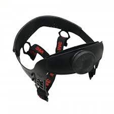

PROTECCIÓN CRANEANA
Los cascos de seguridad para protección craneana tienen la función de amortiguar el impacto producido por objetos que caen sobre el mismo. Es obligatorio utilizar cascos de seguridad durante toda la jornada laboral, en las áreas donde haya señalización (letreros preventivos) o donde haya posibilidad de caída de objetos que se encuentren por encima del nivel de la cabeza.

FUNCION DEL CASCO
Cada casco de seguridad es diseñado para absorber parte de la fuerza de impacto. Los cascos que hayan recibido un impacto deben ser reemplazados, aunque el daño no sea evidente al inspeccionarlos. Los cascos de seguridad deben ser no conductores. Se pueden usar cascos fabricados en diferentes materiales sintéticos, como por ejemplo, ABS (acrilonitrilo-butadieno-estireno), policarbonato, poliéster con fibra de vidrio o polietileno de alta densidad. No se permite el uso de cascos metálicos por el riesgo eléctrico existente (peligro de descargas y quemaduras eléctricas).USO CORRECTO DEL CASCO
El casco debe ajustar correctamente a la medida de la cabeza para que brinde la protección adecuada. Para ello será importante considerar el talle y una correcta selección del arnes. No debe inclinarse hacia el frente, hacia atrás o hacia los lados. Tampoco debe usarse con la visera hacia atrás.
NORMAS
Los cascos deben cumplir con la norma IRAM 3620 “Casco de Seguridad para uso industrial ”. Se deben usar cascos tipo 1 clase B. En la parte interior de la visera deben figurar la fecha de fabricación, la protección dieléctrica y el sello de cumplimiento con la norma IRAM 3620. En el caso de los cascos importados, los mismos deben cumplir con la norma ANSI Z89.1-1989, o equivalente.